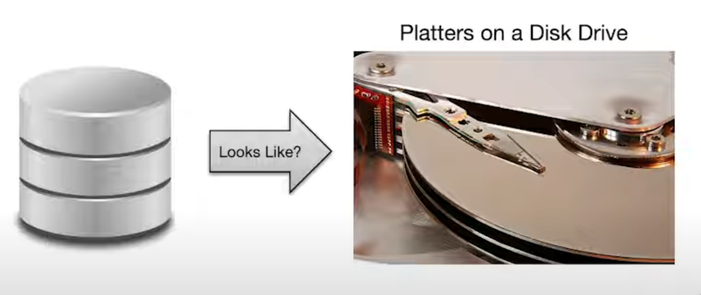

Lecture 1: Why Study Database?
Why?
- Utility
- Data processing is very useful
- Centrality
- Particular and voluminous, often asymmetric
- The core of computing
- Data is growing rapidly
What?
Why the Symbol?
It looks like the platters on a disk drive.

It's the first commercial disk device:
What is Database?
A database is a large, organized collection of data.
Sometimes confused with a Database Management System (DBMS), which refers to software that stores, manages, and facilitates access to data.
Relational DBMSs
- RDBMS: a more appropriate term
- SQL: data description and manipulation language
- ACID: transaction consistency
- Durable: writes (prevent data loss)
- Mature technologies...
Not all DBMSs are relational, there are exclusicves such as Redis, MongoDB.
Marketing Trends
- Cloud DBMS developing rapidly
- One size doesn't fit all
- Other kind of DBMSs: graph DBMS, Time-Series DBMS, ...
- More tools for working with data
Reasons for Change
- Hardware trends, Platform trends, Need to scale, New data-types, New workloads
- Focus on Foundational System Principles
- The goal is to be able to use existing & build new DBMS technologies!
What will Learn?
- Data oriented programming with SQL
- Foundations of Data System Design
- Storage, indexing
- Query processing and optimization
- Transactions
- Concurrency, Consistency, Recovery
- Data Modeling
- Application level represntations of data
Some principles: Data independence, Declarative Programming, Rendezvous in Time and Space, Isolation and consistency, Data representations
Who?
Teacher and TAs.
How?
- Watch the lectures.
- Homeworks: real-world focus
- SQL querying
- Building pieces of a DBMS